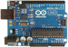

Arduino


Arduino is an open-source electronics prototyping platform that has become very popular among hobbyists. When running a very simple communication ‘sketch’, the Arduino can easily be used with ORCA for simple monitoring and control applications. The basic Arduino UNO board has six ADC inputs and 14 I/O pins. The I/O pins can be set to be input or output. Six of the pins (3,5,6,9,10,11) can output a PWM waveform. See below for initial installation instructions.
Also see below for some customization that can be done to the server code for specialized applications


Select the RS-232 port and open/close the connection
The Arduino must run a small server app to communicate with ORCA. ORCA can not compile or download code to an Arduino. You must use the Arduino development tools to do that. The tools are available from the Arduino web-site (here) and the server code is available within the ORCA project in a file called DigitalReadSerial.ino.
Just install the development tools from the dmg file, open the Arduino app, and copy the server code to the edit window. Once the server code is downloaded you can connect with ORCA.
There are three libraries that you must install into the Arduino app.
You can also find the libraries on the Arduino site.
Once you have the libraries do the following:
-
1) cd into /Applications/Arduino.app/Contents/Resources/Java/libraries
-
2) Copy the zip files there and unzip them
3) If your Arduino app is running, stop and restart it.
That should be it.
Customization
The server code (sketch) running on the Arduino has hooks in place to allow easy customization for specialized applications. The following features exist:
-
• customMethod() -- you can add your own special code into this method.
-
• an array of custom values that can be used to send user information back to ORCA.
-
• an array of control values that can be used to send control information to the Arduino
Here is a simple example of using the custom method that just counts up and sends the value back to ORCA in custom channel 0. It is started if controlValue[0] is 1, reset if controlValue[0] is 2, and is off if controlValue[0] is any other value.
int count=0;
void customMethod()
{
if(controlValue[0]==1){
Serial << kCustomValueChanged << "," << 0 << "," << count++ << "\n\r";
}
else if(controlValue[0]==2){
count = 0;
Serial << kCustomValueChanged << "," << 0 << "," << count << "\n\r";
}
}
An example of controlling the counter from ORCAScript is here:
function main() {
a = find(ORArduinoUNOModel,1);
[a writeControl:0 value:1]; //start counting
waitUntil([a customValue:0] >= 10000);
[a writeControl:0 value:0];//stop counting when count exceeds 10000
sleep(1);
[a writeControl:0 value:2]; //reset the counter
}

ADC values from last poll
I/O pins can be named
Set the I/O pin type to be Input, Output, or PWM
Write pin types, output states, and PWM values
PWM values
When the Arduino is used in an ORCA process, these are the low and high alarm limits
When the Arduino is used in an ORCA process, these are used to scale the adc meter displays
When the Arduino is used in an ORCA process, you can scale the ADC values in a linear manner
This values can be used by customizing the server code